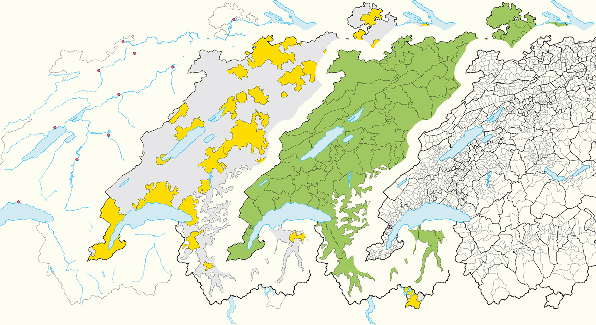
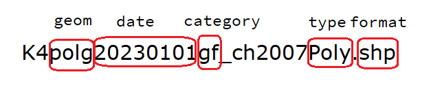

Use Case: Swiss maps
2024-03-25
Get all the R code of this talk: felixluginbuhl.com/talks
Disclamer: I am a self-trained R mapper!1
Online presence: felixluginbuhl.com, github.com/lgnbhl.
International level:
European level:
Country level (Switzerland):
Get world data from the Natural Earth Project.
```r .smaller #| echo: true #install.packages(“rnaturalearth”) library(rnaturalearth) library(ggplot2) library(sf)
world <- ne_countries(returnclass = “sf”)
ggplot(world) + geom_sf() + theme_minimal()
## International geodata
You also can access physical geodata with `ne_download()`.
```r
#| echo: true
rivers50 <- ne_download(
scale = 50,
type = "rivers_lake_centerlines",
category = "physical",
returnclass = "sf")
ggplot(rivers50) +
geom_sf() +
theme_minimal()Get national data with “country” argument (“geounit” for metropolitan only):
Get “state” (cantonal) level data with ne_states().
Access Eurostat Mapping API.
Swiss national geoportal (Swiss Stac API) with bfs_get_catalog_geodata().
The ThemaKart project gives access to various thematic maps.

A typical base maps ThemaKart file looks like this:

You can access base maps files with bfs_get_base_maps().
#| echo: true
# list of geometry names: https://www.bfs.admin.ch/asset/en/24025645
switzerland_sf <- bfs_get_base_maps(geom = "suis")
communes_sf <- bfs_get_base_maps(geom = "polg", date = "20230101")
districts_sf <- bfs_get_base_maps(geom = "bezk")
cantons_sf <- bfs_get_base_maps(geom = "kant")
cantons_capitals_sf <- bfs_get_base_maps(geom = "stkt", type = "Pnts", category = "kk")
lakes_sf <- bfs_get_base_maps(geom = "seen", category = "11")#| echo: true
library(ggplot2)
ggplot() +
geom_sf(data = communes_sf, fill = "snow", color = "grey45") +
geom_sf(data = lakes_sf, fill = "lightblue2", color = "black") +
geom_sf(data = districts_sf, fill = "transparent", color = "grey65") +
geom_sf(data = cantons_sf, fill = "transparent", color = "black") +
geom_sf(data = cantons_capitals_sf, shape = 18, size = 3) +
theme_minimal() +
theme(axis.text = element_blank()) +
labs(caption = "Source: ThemaKart, © BFS")Each observation of your data should be joined to a geodata spatial geometry.
The sf R package (for “Simple Feature”) allows to do it in a tidy way.
Let’s download an official Swiss dataset with BFS:
r, results = 'hide' #| echo: true #bfs_get_catalog_data() # get catalog # Swiss dataset: https://www.bfs.admin.ch/asset/de/px-x-1502000000_101 swiss_students <- BFS::bfs_get_data( number_bfs = "px-x-1502000000_101", language = "fr", clean_names = TRUE)
We can then pivot it and calculate share of female students:
#| echo: true
library(tidyverse)
swiss_students_gender <- swiss_students |>
filter(nationalite_categorie == "Suisse", #only Swiss students
canton_de_lecole != "Suisse") |> #only cantonal data
pivot_wider(names_from = sexe, values_from = eleves_et_etudiants) |>
mutate(share_woman = round(Femme/`Sexe - Total`*100, 1))
glimpse(swiss_students_gender)We can then joining our data to the geodata.
We need to do some recoding before the left join.
#| echo: true
swiss_student_map <- swiss_students_gender %>%
filter(canton_de_lecole != "Schweiz") %>% # remove national level
mutate(canton_de_lecole = str_remove(canton_de_lecole, ".*/"),
canton_de_lecole = str_trim(canton_de_lecole),
canton_de_lecole = recode(canton_de_lecole, "Berne" = "Bern", "Freiburg" = "Fribourg", "Grischun" = "Graubünden", "Ticino" = "Tessin", "Wallis" = "Valais")) |>
left_join(swiss_map, by = c("canton_de_lecole" = "name")) |>
select(canton_de_lecole, annee, degre_de_formation, share_woman, geometry)
glimpse(swiss_student_map)To ease your work with geodata names, I provided the Swiss official registers.
mapviewmapview provides functions to very quickly and conveniently create interactive visualisations of spatial data. It’s main goal is to fill the gap of quick (not presentation grade) interactive plotting to examine and visually investigate both aspects of spatial data, the geometries and their attributes. It can also be considered a data-driven API for the leaflet package as it will automatically render correct map types, depending on the type of the data (points, lines, polygons, raster).
Source: https://r-spatial.github.io/mapview/
mapviewThe easy way with mapview (but limited customization).
mapviewUsing mapview with our Swiss students dataset.
#| echo: true
swiss_student_map_pivoted <- swiss_student_map |>
pivot_wider(names_from = "degre_de_formation", values_from = "share_woman") |>
sf::st_as_sf()
swiss_student_map_pivoted |>
filter(annee == "2022/23") |>
mapview(zcol = "Degré de formation - Total", layer.name = "% étudiantes suisses, 2023")mapviewmapview is using Leaflet in the background, which allows to access extra functionality:
#| echo: true
map_2023 <- swiss_student_map_pivoted |>
filter(annee == "2022/23") |>
mapview(zcol = "Degré de formation - Total", layer.name = "% étudiantes suisses, 2023")
map_2000 <- swiss_student_map_pivoted |>
filter(annee == "1999/00") |>
mapview(zcol = "Degré de formation - Total", layer.name = "% étudiantes suisses, 2000")mapviewmapview is using Leaflet in the background, which allows to access extra functionality:
mapviewmapview is using Leaflet in the background, which allows to access extra functionality:
mapviewmapview is using Leaflet in the background, which allows to access extra functionality:
leafletLet’s reproduce this datawrapper map:
leafletLet’s find the data with bfs_get_catalog_tables().
leafletLet’s download and read the data.
leafletLet’s download and read the data.
leafletTop 5 by commune by rank and percent:
leafletCreate html table for each commune
#| echo: true
create_table <- function(name) {
df <- df_top_5 |>
filter(GDENAME == name)
table <- df |>
select("Rank" = RANK, "Last name" = LASTNAME,
"Number" = VALUE, "Percentage" = PCT_GDE) |>
mutate(Rank = paste0(Rank, "."),
Percentage = paste0(Percentage, "%")) |>
kableExtra::kable(format = "html", align = "llrr")
paste0(
"<b>", unique(df$GDENAME), "</b><br>",
table
)
}leafletleafletAdd html table code in the table column.
leafletGet official Swiss base maps.
leafletJoin our data with geodata.
leafletCreate a basic leaflet map.
#| echo: true
library(leaflet)
# customize legend
bins = c(0, 1, 2.5, 5, 10, 20, 100)
col_custom = c("#f5b3bb", "#ef8894","#e85767","#dc0018","#a60013","#73000d")
pal <- colorBin(col_custom,
domain = sf_communes_joined$PCT_GDE,
bins = bins)
legend_labels <- c("0 – 1", "1 – 2.5", "2.5 – 5",
"5 – 10", "10 – 20", "20 – 100")
map <- leaflet(sf_communes_joined, height = 600, width = 900) |>
addPolygons(
weight = 0.3,
opacity = 1,
color = "white",
fillOpacity = 1,
fillColor = ~pal(PCT_GDE),
label = ~lapply(table, htmltools::HTML),
) |>
addPolygons(
data = lakes_sf,
label = ~name,
stroke = FALSE,
color = "gray70"
) |>
addLegend(
title = "Share of the most<br>common surname, in %",
labFormat = function(type, cuts, p) { paste0(legend_labels) },
values = ~PCT_GDE,
pal = pal,
opacity = 1
)leafletCreate a basic leaflet map.
leafletAdding bounding box, empty background and fix zooming.
#| echo: true
# get bounding box of Switzerland
bbox <- st_bbox(sf_communes_joined) |>
as.vector()
map_final <- map |>
addTiles(urlTemplate = "", # empty background
options = providerTileOptions(minZoom = 8, maxZoom = 12)) |>
setMaxBounds(lng1 = bbox[1], lat1 = bbox[2],
lng2 = bbox[3], lat2 = bbox[4]) |>
leaflet.extras::setMapWidgetStyle(style = list(background = "transparent"))leafletAdding bounding box, empty background and fix zooming.
leafletAdd map in a card with title and legend.
#| echo: true
library(bslib)
library(htmltools)
card <- card(
tags$h5("The Five Most Frequent Last Names by Commune, 2022"),
tags$i("Hover to display the five most common surnames (actual number and percentage) by commune."),
map,
tags$p(
"Source: FSO – STATPOP, inspired by:",
tags$a("https://www.bfs.admin.ch/asset/en/27205601",
href = "https://www.bfs.admin.ch/asset/en/27205601")),
tags$p("Get the R code:",
tags$a("felixanalytix.com",
href = "https://felixanalytix.com")),
min_height = 800,
max_height = 800
)leafletAdd map in a card with title and legend.
Get the R code of this talk:
You can contact me on LinkedIn:
Thank you for your attention!